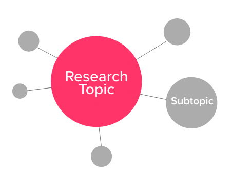

How to make an Impactful Information Visualisation?
Inorder to create an ideal Information Visualisation, our goal should always be generating design that people can understand and consumer easily. The can be segmented into the following.
Life of an Information Visualisation project
We can further look at these elements and understand how each part of these life process influence an Information Design project

Context
Understanding the context will get you closer to your audience. Its about understanding humans and how we can relate to them through a medium. Context may include, age, literacy level, geographical location, accessibility, etc
“If you create something that nobody uses, you’ve failed to communicate.”
Making the most of a medium
Be it print / web/ immersive Tech. Every medium is different with its own pros and cons. It is required to understand the medium through with the visualisation is being published and make the most of the the what the medium can offer.
Also it is unimaginable to think what the next wave of technology would be, In currentl world, John Maeda thinks that the technology is evolving on the basis of. Moore law. Its harder to predict what the next wave of technology would define Information Visualisation.

Access to internet, increased broadband speeds have already powered the foundation of a technology wave. It is evident that we embrace the current technology and perhaps also try to look in the future even if the technology in their nascent stage
Research
Research is a multidimensional element involves understanding users, topic, data. The intersection of the above elements will pave way for further exploration of the topic and the narrative itself. Good research will often result in good insights

Research should also not happen in isolation. It should be happen in parallel with the existing world and events happening around you. This will help to find connection and discover correlation and influences.
Narrative
Narrative involves looking at the insights and bringing out the story. The aim of the story should be simple and shouldn’t involve a lot of trajectories. Always keep in mind that designer is not the end user for this project.

Visualise and Prototype
The Insights generated through the research and narrative section have to be visualised. Readily available visualisation tools were not designed to understand human emotions and feels. It should be the responsibility of the designer to utilise these known human characteristics to compose the visualisations.
Protyping makes it easier to find the best possible way to communicate the narrative efficiently with bare bare minimum intervention of ornamentation. The focus should be to be explain the data and not essentially make its aesthetically pleasing. As it goes without saying ‘Good Design is aesthetically good'

Interact and Consume
Interaction doesn’t necessarily have to be something to touch or play with. It could be both tangible and intangible. Interaction with the user can be made possible using motion, color, scale, composition. It plays a crucial role in how deeply the narrative gets to the user and how impactful it would be in altering user’s choices, opinions in the future. Interaction also has to happen expecting minimal contribution from the user
With the advent of technology, personalisation has become a key feature to create impact. It tells a unique story that nobody has ever told to anyone. It connects the user more deeply and hence better results

Consuming an information visualisation should require minimum effort from the user. The information visualisation has to draw attention from the user but still has to stay true to its sense of fulfilling its purpose.